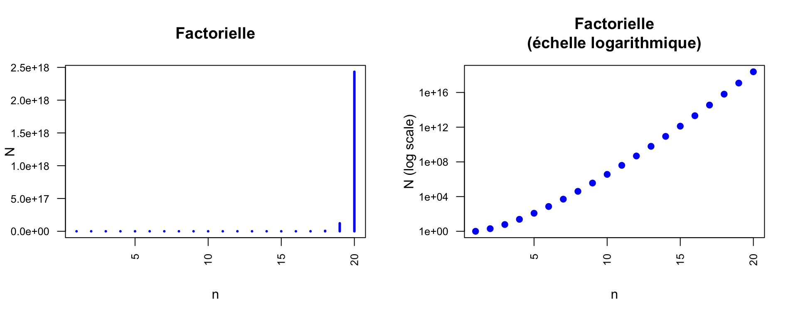

Number of oligomers

Number of possible oligonucleotides (top) and oligopeptides (bottom) with either a linear (left) and logarithmic (right) scale for the ordinate.
Jacques van Helden
2019-09-14
DNA is composed of 4 nucleotides denoted by the letters \(A\), \(C\), \(G\), \(T\). Proteins are made of 20 amino acids.
For each one of these two types of macromolecules, how many distinct oligomers can be formed by polymerizing 30 residues (20-mers) ?
Suggested approach: start by addressing a simpler form of the same problem, by starting with polymers of much smaller sizes: 1, then 2 residues, …
Generalize the formula for oligomers of an arbitrary size \(k\) (so-called k-mers in the domain), made of \(n\) distinct residues.
What is the name of the function resulting from this analysis?
In this process, which mode did you use to pick up the residues: with or wirhout replacement?
The underlying process is a drawing with replacement: at each position of the sequence, we can choose any of the \(n\) residues (\(n=4\) for nucleotidic sequences, \(n=20\) for peptidic sequences).
Progressive approach of the solution
Trivial case: single-residue sequence \(\rightarrow\) there are exactly \(n\) possibilities.
Two-residue sequences: for each of the \(n\) possible residues at the first position, we can select \(n\) resodies for the second one \(\rightarrow\) there are \(n \cdot n = n^2\) possible dimers.
Trimers: for each of these dimers, there are \(n\) possible residues that can be chosen for the\(3^{d}\) position \(\rightarrow\) there are $n^2 n = n^3 distinct trinucleotides.
Generalisation to \(k\)-mers: there are \(n^k\) distinct sequences of size \(k\).
In our case, the sequence size was \(k=30\). We have thus
If we consider the succession of numbers obtained for increasing oligomer sizes \(k=1, 2, \cdot\) we observe a geometric progression.
The geometric progression is a succession of numbers where each term can be computed by multiplying the previous one by a constant factor.
\[x_i = x_{i-1} \cdot n\]
For a large size of \(k\) the formula can be developed.
\[\begin{aligned} x_k &= x_{k-1} \cdot n \\ &= (x_{k-2} \cdot n) \cdot n = x_{k-2} \cdot n^2 \\ &= x_{k-3} \cdot n^3 = \ldots = x_0 \cdot n^k \end{aligned}\]
In our case, the initial value is \(x_0=1\); \(k\) denotes the oligomer size, and \(n\) is the number of distinct residues used to form the oligomer (\(n=4\) for nucleic acids, \(n=20\) for amino acids).
Number of possible oligonucleotides (top) and oligopeptides (bottom) with either a linear (left) and logarithmic (right) scale for the ordinate.
How many oligomers can be formed (DNA or peptides) that would contain exactly once each residue.
Suggested approach: progressively aggregate the residues whilst wondering, at each step, bow many residues have not yet been incoroporated in the sequence.
Sub-questions:
Generalise the formula for sequences of any type of elements drawn from a set of arbitrary size \(n\).
What is the name of the corresponding function?
In this process, what is the mode of residue selection: with or without replacement?
In our case:
\[N = n! = \left\{ \begin{array}{ll} 1 & \text{if } n=0 \\ n \cdot (n-1)! &\text{otherwise} \end{array} \right.\]
Notes: 0! vaut 1, par définition, ce qui permet de calculer 1! avec la formule récursive.
Pour \(n\) suffisamment grand cela donne en clair.
\[N = n \cdot (n-1) \cdot (n-2) \ldots 2 \cdot 1\]

Nous résumons ici les formules les plus utilisées en analyse combinatoire.
On appelle arrangements les tirages ordonnés effectués sans remise au sein d’un ensemble.
Nombre d’arrangements de \(x\) éléments tirés parmi \(n\).
\[\begin{array}{ccl} A^x_n & = & \frac{n!}{(n - x)!} \\ & = & \frac{n(n-1) \ldots (n-x +1) (n - x) (n-x-1) \ldots 2 \cdot 1}{(n - x) (n-x-1) \ldots 2 \cdot 1} \\ & = & n \cdot (n-1) \cdot \ldots \cdot (n-x+1) \end{array} \]
Application typique:
tiercé dans l’ordre.
Les joueurs parient sur les trois chevaux gagnants d’une course (\(x=3\)). Pour \(n=15\) chevaux partants, il existe \(n \cdot (n-1) \cdot (n-2) = 15 \cdot 14 \cdot 13 = 2730\) possibilités.
On appelle combinaisons le nombre de sous-ensembles de \(x\) qu’on peut tirer sans remise dans un ensemble de taille \(n\), si l’on ne tient pas de l’ordre des éléments tirés.
Ce nombre est fourni par le coefficient binomial.
\[\binom{n}{x} = C^x_n = \frac{n!}{x! (n-x)!}\]
Attention: les paramètres sont placés différemment dans la première (\(binom{n}{x}\), “x parmi n”) et la seconde notation (\(C^x_n\), “choose”).
tiercé dans le désordre.
\[\binom{n}{x} = \binom{15}{3} = C^3_{15} = \frac{15!}{3! 12!} = 455\]
jeu de loto (ou lotto): chaque joueur dispose d’une grille avec 90 numéros, et doit en cocher 6. Nombre de possibilités: \[\binom{n}{x} = \binom{90}{6} = C^6_{90} = \frac{90!}{6! 84!} = 6.2261463\times 10^{8}\]
On a mené une expérience de transcriptome pour mesurer le niveau d’expression de tous les gènes de la levure. Sachant que le génome comporte 6000 gènes, combien de possibilité existe-t-il pour sélectionner les 15 gènes les plus fortement exprimés (en tenant compte de l’ordre relatif de ces 15 gènes) ?
Approche suggérée: comme précédemment, simplifiez le problème en partant de la sélection minimale, et augmentez progressivement le nombre de gènes (1 gène, 2 gènes, …).
Questions subsidiaires:
Il s’agit d’une sélection sans remise (chaque gène apparaît à une et une seule position dans la liste de tous les gènes), et ordonnée (les mêmes gènes pris dans un ordre différent sont considérés comme un résultat différent).
Lors d’une expérience de transcriptome indiquant le niveau d’expression de tous les gènes de la levure. Sachant que le génome comporte 6000 gènes, combien de possibilité existe-t-il pour sélectionner les 15 gènes les plus fortement exprimés (sans tenir compte de l’ordre relatif de ces 15 gènes) ?
Approche suggérée: comme précédemment, simplifiez le problème en partant de sélections minimales (1 gène, 2 gènes, …) et généralisez la formule.
Questions subsidiaires:
Il existe deux types classiques de tirage d’éléments au sein d’un ensemble: avec ou sans remise.
Tirage sans remise: chaque élément peut être tiré au plus une fois. Exemples:
Tirage avec remise: chaque élément peut être tiré zéro, une ou plusieurs fois. Exemples:
| Remise | Ordre | Formule | Description |
|---|---|---|---|
| Oui | Oui | \(n^x\) | Suite géométrique: tirages ordonnés (séquences), avec remise, de \(x\) éléments dans un ensemble de taille \(n\). |
| Non | Oui | \(n!\) | Factorielle: permutations d’un ensemble de taille \(n\) |
| Non | Oui | \(A^x_n = \frac{n!}{(n-x)!}\) | Arrangements : tirages ordonnés, sans remise, de \(x\) éléments dans un ensemble de taille \(n\) |
| Non | Non | \(C^x_n = \binom{n}{x} = \frac{n!}{x! (n - x) !}\) | Combinaisons : tirages non ordonnés, sans remise, de \(x\) éléments dans un ensemble de taille \(n\) |
Combien d’oligopeptides de taille 60 peut-on former en utilisant exactement 3 fois chaque acide aminé ?
Combien d’oligopeptides de taille 60 peut-on former en utilisant exactement 3 fois chaque acide aminé ?
Commençons par générer une séquence particulière qui remplit ces conditions, en concaténant 3 copies de chaque acide aminé, dans l’ordre alphabétique.
AAACCCDDDEEEFFFGGGHHHIIIKKKLLLMMMNNNPPPQQQRRRSSSTTTVVVWWWYYYToutes les permutations de ces 60 lettres sont des solutions valides. En voici trois exemples.
MGQIRGRTQHDMENLSKAWEFSCYSHYLLPNTWHGDVAIKCYREMIAVDPWTKQVFNCFPELIPQNDCMPYFVFKRAMQEGLCGYWNHIIPMVATWKSCTDAHQHYLGRDWKNTVSFSREFHIKDTWPYMVFSQDLGLRQCRDGYVSPMYEPTFGWMKQRENESCKNLICTHVWAIAANHCependant, il faut prendre en compte le fait que certaines permutations sont identiques (toutes celles où l’on permute deux acides aminés identiques). La difficulté de l’Exercise sera donc de dénombrer le nombre de permutations distinctes.